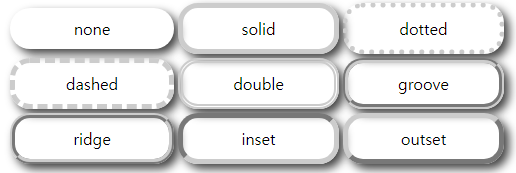

2021-02-24
다양한 속성으로 테두리 표시하기
border style 종류

모서리가 둥근 테두리 만들기
border-radius - 둥근 테두리
순서 : border-radius:top,right,bottom,left
테두리 외곽에 아웃라인 처리하기
outline - 테두리 외곽 아웃라인
순서 : outline:width style color offset
요소의 배경 이미지 속성 적용
전체값 0으로 먼저두기 *{padding, margin, border}
ex)
background-color:silver - 배경색
background-image:url(images/bg0.png) - 배경이미지
background-repeat:repeat-y - 반복여부
background-position:top right - 위치
background-attachment:fixed - 고정
ex)
background:#000 url(images/dot.png) repeat-x fixed bottom left
순서 : color image repeat attachment position
background-size 순서 : cover, contain, w숫자, h숫자
background-origin : (border-box : 보더 왼쪽 위부터 배경채움 padding-box : 패딩 왼쪽 위부터 배경채움 content-box : 내용 왼쪽 위부터 배경채움)
background 이미지 다중 속성 적용할시 ,(콤마) 하고 옆에 다른 이미지 불러오기. 다른 repeat, position, size 등
속성 적용시에도 동일하다.
이미지, 색상, 글자 투명도 조정하기
opacity:투명도
background-color:hsla(0,0%,100%,0.6)
- hue(색상), saturation(채도), lightness(밝기), alpah(투명도)
color:rgba(255,225,255,0.7)
- red green blue 0~255 alpha 1